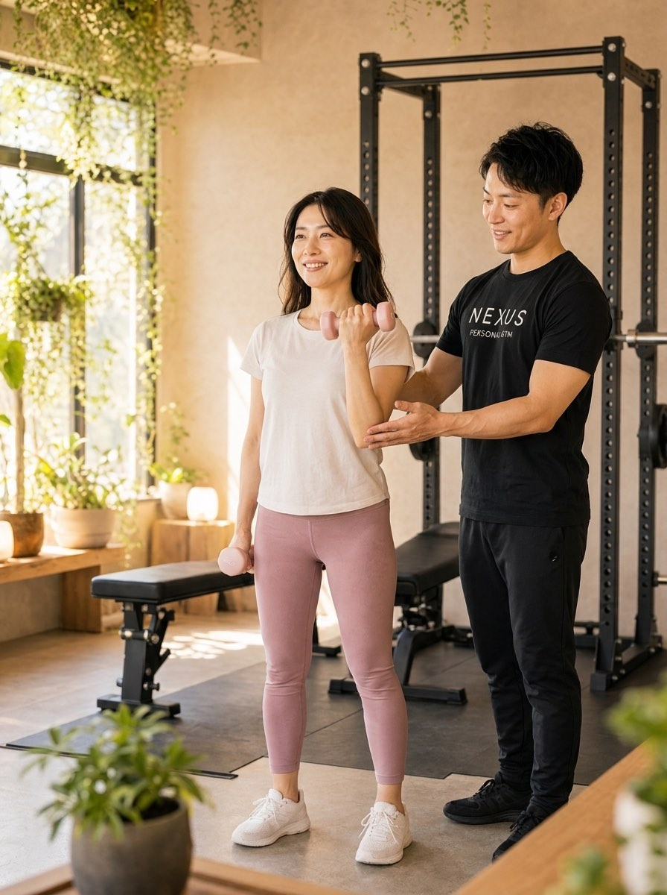
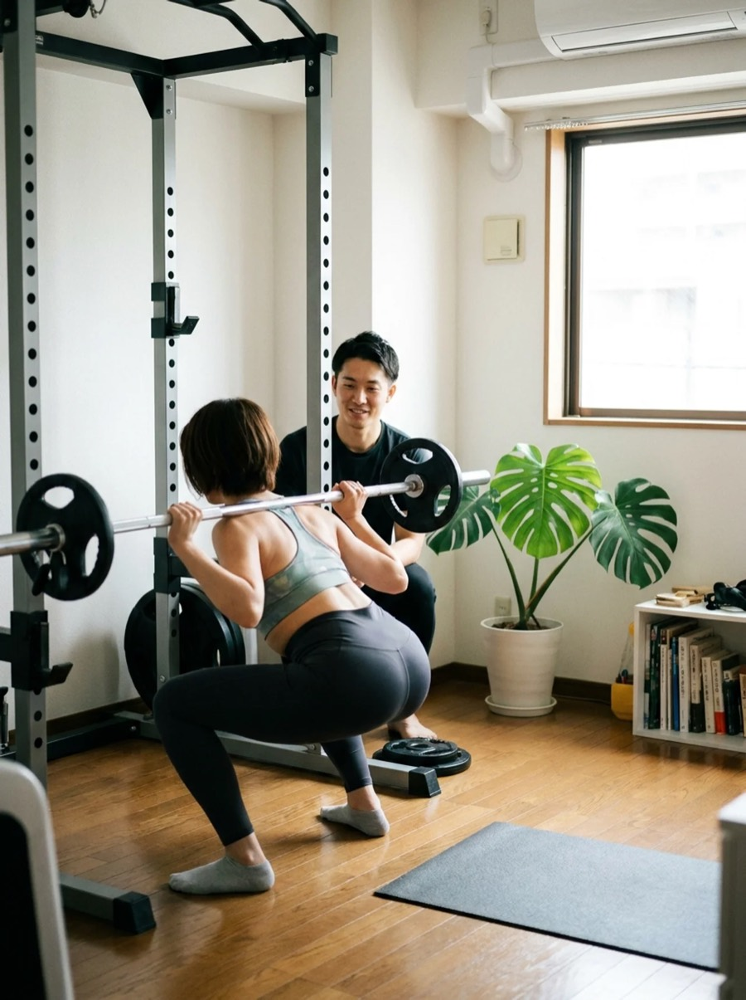

NEXUS Personal Gym ／ 東京都港区
NEXUSパーソナルジム 三田/芝公園店｜三田・芝公園で、週3で変わる完全個室ジム

都営三田線・浅草線 三田駅、都営三田線 芝公園駅から徒歩圏、港区芝のオフィス街にある完全個室の隠れ家パーソナルジムです。月12回（週3ペース）のベーシックコースを活かした高頻度トレーニングで、忙しい20〜30代でも「最短ルート」で身体を変えていきます。毎日8:00〜23:00・手ぶらOKだから、出社前も仕事帰りも続けやすい。
- ブライダル対応
- 完全個室
- 手ぶら通いOK
- 毎日8:00〜23:00
- 週3ペースの高頻度
- 疲労度に合わせて調整
この店舗の特徴
NEXUS三田/芝公園店は、三田・芝公園のオフィス街に佇む完全個室のパーソナルジム。大きな看板を出していないため、三田・芝公園・芝浦・港区エリアで働く忙しい20〜30代に「人目を気にせず、短い期間で結果を出したい」という理由で選ばれています。三田/芝公園店が得意とするのは、月12回（週3ペース）の高頻度トレーニング。まとめて時間が取れなくても、1回60分を週に数回積み重ねることで、フォームの定着も見た目の変化も早まります。ウェア・タオル・プロテインまで無料提供の手ぶら通いOKで、毎日8:00〜23:00営業。出社前でも帰宅前でも、生活動線に無理なく組み込めます。
週3ペースが、いちばん早い

身体づくりで結果を左右するのは、1回の強度よりも「継続と頻度」です。三田/芝公園店では月12回（週3ペース）のベーシックコースを軸に、こまめにトレーニングを積み重ねる通い方を提案しています。実際に会員からは「月12回コースでハードに追い込め、忙しくても運動習慣を維持できている」という声も。1回あたり7,900円（ベーシック月12回 94,800円）と高頻度でもコスパよく続けられ、フォームが早く身につくぶん、遠回りせずに目標へ近づけます。
30代になり体型が気になり、月12回コースへ切り替えました。忙しい仕事と両立しながらも、週3ペースでしっかりハードに追い込めています。頻度が上がったぶん動きにも慣れてきて、通うのが習慣になりました。
数週間で、見た目から変わる

「せっかく始めるなら、早く変化を実感したい」——三田/芝公園店はそんな短期集中派にも応えます。高頻度トレーニングに、無理のない食事指導を組み合わせることで、数週間のうちから見た目の変化が出はじめます。会員からも「短期集中で始めて数週間、すでに見た目に変化が出てモチベーションが上がる」「食事指導も無理がなく続けられる」という声をいただいています。極端な制限で一時的に数字を落とすのではなく、続けられる食べ方で変化を積み上げていきます。
運動習慣ゼロから短期集中プランで始めました。数週間で見た目に変化が出てきて、毎回の達成感が続ける理由になっています。食事も無理な制限ではなく、これなら続けられるという内容で助かっています。
三田・芝公園のオフィス帰りルーティン

三田/芝公園店は都営三田線・浅草線 三田駅、芝公園駅から徒歩圏。会社帰りにそのまま立ち寄れる動線で、毎日8:00〜23:00営業だから「出社前の朝トレ」も「残業後の夜トレ」もどちらもOKです。手ぶら通いなのでスーツにバッグひとつで来店でき、ウェアもタオルも用意不要。週3ペースを崩さず続けるには、生活動線のなかに無理なく組み込めることが何より大切。三田/芝公園店はその「通いやすさ」で高頻度を支えます。
その日の疲労度から組み立てる
高頻度トレーニングで気になるのが「毎回追い込んで大丈夫？」という不安。三田/芝公園店では、来店ごとにその日の体調と疲労度をヒアリングし、内容を調整します。しっかり追い込む日もあれば、フォーム確認やコンディショニング中心にとどめる日もある——強度をコントロールするからこそ、週3ペースでもケガや過労なく続けられます。会員からも「体調と疲労に合わせて毎回内容を調整してくれるので、高頻度でも安心」という声。高頻度と調整力はセットで、はじめて最短ルートになります。
週1回×4ヶ月でしたが、的確な指導と食事アドバイスのおかげで身体の変化をはっきり実感できました。その日の状態に合わせて内容を組み立ててくれるので、毎回納得感があります。
まずは無料体験から

初回は60分程度の無料体験。カウンセリングで「いつまでに・どこを・どれくらいの頻度で」変えたいかをうかがい、姿勢チェックと実際のトレーニングまで体験できます。三田/芝公園店なら週3ペースの高頻度プランも、まずは無理なく始められる頻度からのスタートも設計可能です。無理な勧誘は一切ありません。まずは話だけでも、気軽に来てください。
結婚式前のボディメイクを、三田/芝公園で

「ドレスの試着で二の腕が気になった」「背中の開いたデザインを、体型を理由に諦めたくない」——挙式という動かせない期日があるからこそ、ボディメイクは最後までやり切れます。三田/芝公園店では、まず挙式日とドレスのデザインをうかがい、背中・二の腕・デコルテ・ウエストという、ドレスでもっとも視線が集まる部位から優先順位をつけていきます。完全個室のマンツーマンだから、人目を気にせず自分の身体とだけ向き合えます。

残された日数によって、やるべきことは変わります。三田/芝公園店では挙式日から逆算した90日プラン・60日プランを用意し、「いつまでに、どの部位を、どこまで」を最初に設計します。極端な食事制限で当日フラフラ……ということがないよう、その日のコンディションから逆算する無理のない指導で、式当日にピークを合わせます。会員の約85%が女性で、ブライダルのご相談は日常的。体に不必要に触れないノータッチ指導を基本にしているので、はじめての方も安心です。

週を追うごとに、ドレスの試着で鏡に映る自分が変わっていきます。背中がすっと伸び、二の腕のたるみが引き締まり、デコルテに華やかさが出る。「このデザインで大丈夫かな」から「このドレスを選んでよかった」へ——目標が数字ではなく“当日の自分の姿”だからこそ、モチベーションが途切れません。三田/芝公園エリアで挙式を予定されている方は、エリア内の式場への下見や打ち合わせの動線に、そのままトレーニングを組み込めます。

迎えた挙式当日。積み重ねた90日・60日は、鏡の前の安心感になって返ってきます。姿勢よく背筋を伸ばして立ち、写真のどの角度でも堂々といられる——それは、頑張ってきた自分だけが手にできる自信です。三田/芝公園店は、その一日のために全力で伴走します。

挙式は、新しい生活のスタートでもあります。せっかく作り上げた身体を、そのまま新生活の習慣に。三田/芝公園店は毎日8:00〜23:00営業・月4回18,000円（1回4,500円〜）から続けられるので、挙式後の体型維持から、将来の産後の体型戻しまで長く伴走できます。全国約70店舗のネットワークがあるため、引っ越しや里帰りの際も最寄り店舗へ。「一生に一度」のために始めた習慣が、その後の人生を支える土台になります。
挙式まで残り80日で駆け込みました。背中の開いたドレスに合わせて、二の腕と背中を中心にプランを組んでもらい、当日は自信を持って写真に写れました。式後もそのまま通っています。
上記はサービス内容をわかりやすく伝えるためのモデルケース（イメージ）であり、実在するお客様の口コミではありません。Google口コミは本ページ内の該当セクションに実際の内容を要約して掲載しています。
挙式日からの逆算タイムライン｜ブライダル専用ページを見る料金プラン
入会金は通常55,000円、無料体験当日入会で15,000円（税込）に割引。全店舗共通の料金です。
アクセス
- 店舗名
- NEXUSパーソナルジム 三田/芝公園店
- 住所
- 〒105-0014
東京都港区芝2-26-5 国見土木ビル 2階 - 最寄り駅
- 都営三田線・浅草線 三田駅／都営三田線 芝公園駅／JR 田町駅
- 営業時間
- 毎日 8:00〜23:00
- 電話番号
- 050-1790-8486
Googleマップの口コミ
出典：Google マップ
NEXUS三田/芝公園店はGoogle口コミ101件で★5.0を維持。月12回の高頻度コースを活かした最短距離の身体づくりと、体調に合わせた調整力が評価されています。
田町の職場から近く、仕事帰りに寄れるのが決め手でした。毎日23時まで営業しているので、残業後でも通えて助かっています。手ぶらでOKなのもありがたく、無理なく週の回数を積めています。
完全個室で人目を気にせず集中できます。トレーナーさんがその日の疲れ具合を見ながらメニューを組んでくれるので、頻度高めで通っても無理がありません。清潔感もあって通うのが楽しみです。
三田/芝公園店のよくある質問
Q三田・芝公園エリアで完全個室のパーソナルジムはありますか？+
Q週3回など高頻度で通うと早く結果が出ますか？+
Q出社前の朝でも通えますか？+
Q挙式まで3ヶ月ですが、結婚式に間に合いますか？+
Qドレスで気になる背中や二の腕を集中的に絞れますか？+
Q結婚式が終わった後も通い続けられますか？+
よくある質問（全店共通）
料金・制度などNEXUS全店に共通するご質問です。さらに詳しくは110問のFAQをご覧ください。
Q料金はいくらですか？+
Q手ぶらで通えますか？+
Qキャンセルはいつまでできますか？+
Q食事指導はありますか？+
Qトレーナーはどんな人ですか？+
Q女性会員は多いですか？+
Q体験の流れは？+
NEXUSパーソナルジムの特徴・料金をもっと見る